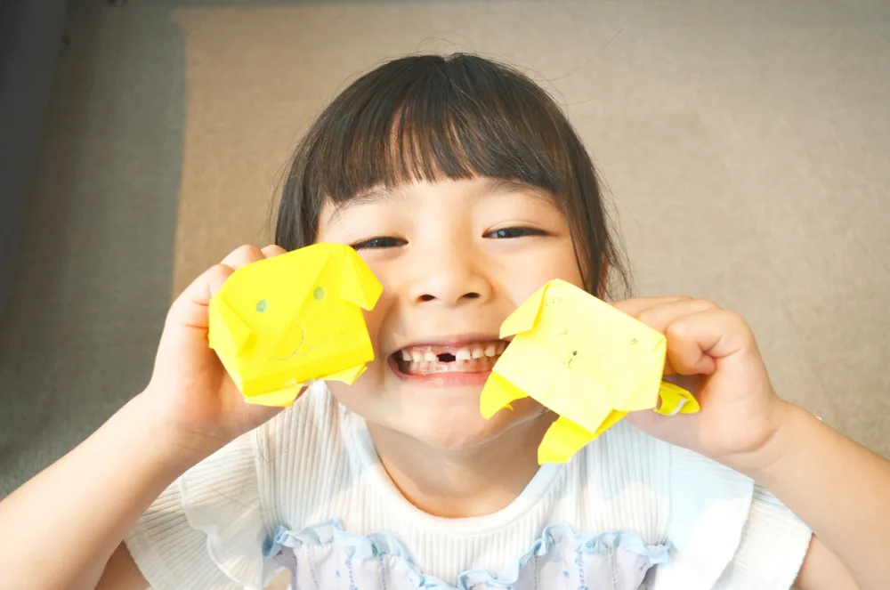

保育園壁面装飾をスキャンカットで簡単に｜無料SVGデータ活用術
2026.04.22

保育園や幼稚園の壁面装飾づくりに、毎回時間がかかって大変と感じていませんか？ハサミで何十枚も切り抜く作業は、保育士さんにとって大きな負担です。そんな悩みを解決してくれるのが「スキャンカット」です。無料のSVGデータと組み合わせれば、壁面装飾がびっくりするほど簡単に作れます。
スキャンカットとは？
スキャンカット（ScanNCut）は、ブラザー工業が製造するカッティングマシンです。SVGやPNGなどのデータを読み込んで、フェルトや画用紙などの素材を自動でカットしてくれます。保育士さんや幼稚園の先生たちの間で、壁面装飾づくりの強い味方として注目されています。
壁面装飾にスキャンカットを使うメリット
- ハサミで切る手間が大幅に削減できる
- 複雑な形も正確にカットできる
- 同じデザインを何枚でも量産できる
- SVGデータがあれば無限にデザインを展開できる
- 保育士さんの残業・負担を大幅に減らせる
無料SVGデータを使った壁面装飾の作り方
ステップ1：SVGデータをダウンロードする
当サイト（miponoe.com）では、動物・季節・行事など保育園の壁面装飾にぴったりな無料SVGデータを配布しています。すべて透明背景・シンプルな線画デザインで、スキャンカットに最適です。
ステップ2：スキャンカットにデータを転送する
ダウンロードしたSVGデータをUSBメモリに保存するか、キャンバスワークスペース（専用ソフト）を使ってスキャンカットに転送します。スキャンカットSDX230E以降の機種はWi-Fiでの転送も可能です。
ステップ3：素材をセットしてカットする
フェルトや画用紙、カラーペーパーなどをカットマットに貼り付けてセットします。スキャンカットが自動でカットしてくれるので、あとは素材を剥がすだけです。
ステップ4：壁面に飾り付ける
カットされたパーツを組み合わせて、壁面に貼り付けます。両面テープや安全ピンを使えば、傷をつけずにきれいに飾れます。
保育園の壁面装飾におすすめの動物SVGデータ
- キツネ・クマ・シカ・ウサギ（森の動物シリーズ）
- フクロウ・リス・ハリネズミ（秋の壁面にぴったり）
- ペンギン・クジラ（冬・海のシリーズ）
- トイプードル・チワワなど人気犬種
- スコティッシュフォールドなど人気猫種
まとめ
スキャンカットと無料SVGデータを組み合わせれば、保育園の壁面装飾づくりが劇的に楽になります。ハサミで悪戦苦闘していた時間を、子どもたちとのふれあいに使えるようになります。ぜひ当サイトの無料SVGデータを活用してみてください。